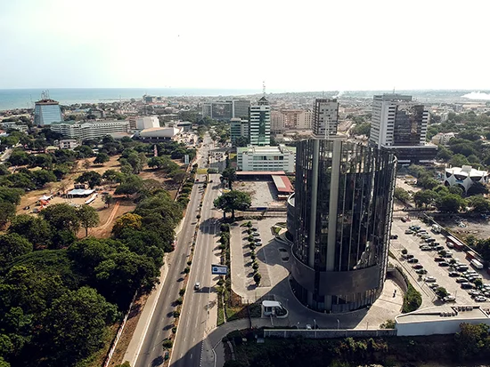

Lawson Kwashie Afedo | WDD 130
Hello! My name is Lawson Kwashie Afedo and I am from Accra, Ghana. I am born into a christian home with a family of seven(7). Thus, two girls,three boys and my parents. I enjoy learning new things though I often find it more challenging from the begining.I love everyone and strive to leave the commandments of the restored Gospel.
Accra, Ghana

Accra, capital of Ghana, on the Gulf of Guinea. The city lies partly on a cliff, 25 to 40 feet (8 to 12 metres) high, and spreads northward over the undulating Accra plains.
When the Portuguese first settled on the coast of what is now Ghana in 1482, the present site of Accra was occupied by several villages of the Ga tribe, ruled from a parent settlement, Ayaso (Ayawaso), located about 15 miles (24 km) north.
Between 1650 and 1680 the Europeans built three fortified trading posts—Fort James (English), Fort Crevecoeur (Dutch), and Christiansborg Castle (Danish)
As a result, three coastal villages—Osu (Christiansborg), Dutch Accra (later called Ussher Town), and James Town—sprang up, becoming the nuclei of what was to be Accra.
The name Accra itself is a corruption of the Akan word nkran. It refers to the black ants that abound in the vicinity. It came to be applied to the inhabitants of this part of the Accra plains. Accra grew into a prosperous trading centre.
The Danes and the Dutch left the region in 1850 and 1872, respectively, and in 1877 Accra became the capital of the British Gold Coast colony. In 1898 a municipal council was formed to improve the town. By the 1930s Accra was systematically laid out